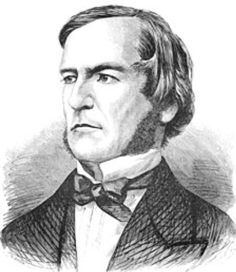
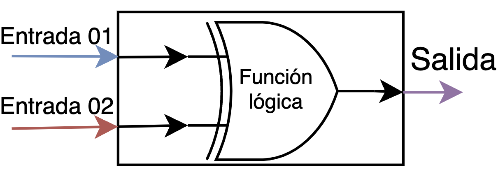
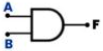
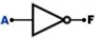
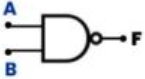
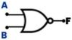
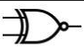
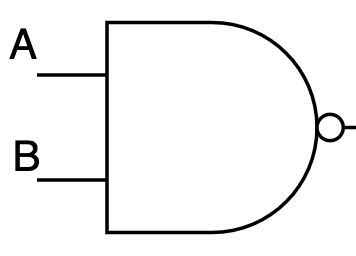
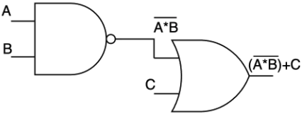
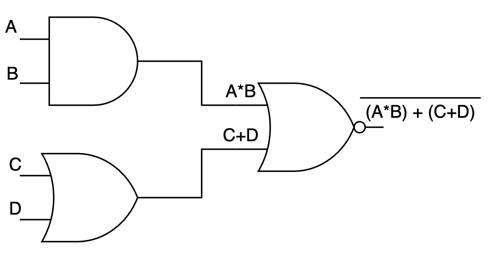

Guía 824: Álgebra de Boole¶
|
|

Exploración Estructuración Actividad práctica Transferencia
Temática: Álgebra de Boole, circuitos lógicos y compuertas digitales.
Objetivo de aprendizaje: Comprender y aplicar los principios del álgebra de Boole para representar, analizar y simplificar circuitos digitales mediante el uso de compuertas lógicas y tablas de la verdad.
DESEMPEÑO: Demuestra una comprensión sólida de los principios fundamentales del álgebra de Boole, aplicando eficazmente las compuertas lógicas, las tablas de la verdad y los sistemas de numeración binaria para la representación, análisis y simplificación de circuitos digitales.
Componente: Naturaleza y evolución de la T&I..
Competencia: Relaciono saberes, conocimientos tecnológicos e informáticos con los conocimientos de otras disciplinas.
Evidencia de aprendizaje: Comprendo los principios y conocimientos tecnológicos e informáticos que hacen posible el funcionamiento de productos tecnológicos actuales.
Actividades desarrolladas en su totalidad.
Participación en clase.
Explicación clara de conceptos.
Argumentación de ideas.
Cumplimiento de las reglas del aula.
Plan de refuerzo 04.pdf Descargar
Mensaje del autor¶
“En esta guía se aplica el álgebra de Boole para representar, analizar y simplificar circuitos mediante compuertas y tablas de verdad; las actividades están diseñadas para evaluar esa comprensión desde lo teórico hasta la simulación práctica.
—Camilo Fonseca
Números binarios¶
Los números binarios son un sistema de numeración cuyos valores solo pueden ser: 1 o 0
El sistema numérico binario es diferente al sistema numérico decimal.
Lenguaje de los dispositivos digitales
Los dispositivos digitales como el celular, tablet o PC solo entienden en sistema numérico binario.
Las dispositivos digitales no entienden directamente lenguaje humano ni tampoco entienden directamente el sistema numérico decimal.
Para entender mejor los números binarios, se presenta la siguiente tabla la cual muestra los números decimales con su representación binaria:
Decimal |
8 bits |
|---|---|
0 |
0000 0000 |
1 |
0000 0001 |
2 |
0000 0010 |
3 |
0000 0011 |
4 |
0000 0100 |
5 |
0000 0101 |
6 |
0000 0110 |
7 |
0000 0111 |
8 |
0000 1000 |
9 |
0000 1001 |
10 |
0000 1010 |
11 |
0000 1011 |
12 |
0000 1100 |
13 |
0000 1101 |
14 |
0000 1110 |
15 |
0000 1111 |
Estados FALSE TRUE
Los números binarios también se usan para representar los estados FALSO o VERDADERO donde:
0: FALSO 1: VERDADERO
George de Boole¶

\[1815-1864\]
|
{kind=link}
NACIMIENTO: Lincoln (Lincolnshire), Inglaterra, 2 de noviembre de 1815
MUERTE: Ballintemple (Condado de Cork), Irlanda, 8 de diciembre de 1864
Fue un matemático y lógico británico. Como inventor del álgebra de Boole, marcó los fundamentos de la aritmética computacional moderna. Boole es considerado como uno de los fundadores del campo de las ciencias de la computación.
En 1854 publicó: An Investigation of the Laws of Thought on Which are Founded the Mathematical Theories of Logic and Probabilities, donde desarrolló un sistema de reglas que le permitían expresar, manipular y simplificar problemas lógicos y filosóficos cuyos argumentos admiten dos estados (verdadero o falso) por procedimientos matemáticos.
Se podría decir que es el padre de los operadores lógicos simbólicos y que gracias a su álgebra hoy en día es posible operar simbólicamente para realizar operaciones lógicas.
Álgebra de Boole¶
El álgebra de Boole en sistemas digitales, se basa en la lógica proposicional y se utiliza para representar un circuito lógico en forma de ecuaciones. En otras palabras, se trata de una herramienta que sirve para resolver y simplificar cualquier problema que se encuentre en los sistemas digitales.
A diferencia del álgebra tradicional, que se basa en números y operaciones aritméticas, el álgebra de Boole utiliza las llamadas variables Booleanas (0 y 1) y operadores lógicos (AND, OR, NOT) para representar y manipular los datos.
Álgebra de Boole en programación
El álgebra de Boole es esencial en programación, especialmente en el desarrollo de algoritmos y estructuras de control condicional. Permite:
Evaluar condiciones.
Tomar decisiones.
Controlar el flujo de ejecución de un programa.
Ventajas del álgebra de Boole¶
Las leyes del álgebra de Boole permiten simplificar expresiones Booleanas complejas, lo que facilita su comprensión y análisis.
Mediante la aplicación de técnicas de simplificación, es posible optimizar el diseño de circuitos digitales, reduciendo el número de compuertas lógicas y mejorando su eficiencia.
El álgebra de Boole proporciona un marco matemático riguroso para el estudio de la lógica y el razonamiento lógico, lo que ha sido fundamental para el desarrollo de la computación moderna.
Aplicaciones del álgebra de Boole¶
Diseño de circuitos digitales: procesadores, memorias y dispositivos lógicos programables.
Programación y algoritmos: el álgebra de Boole permite el control del flujo de ejecución en los programas.
Sistemas de control y automatización: se utiliza en el modelo y diseño de sistemas de control, como en la industria manufacturera.
Criptografía: los principios del álgebra de Boole se aplican en algoritmos criptográficos, proporcionando la base matemática para la seguridad de la información y el cifrado de datos.
Circuito lógico¶
Un circuito lógico es el que está compuesto por:
Unas entradas con valores binarios.
Una función lógica que opera los valores binarios de las entradas.
Una salida con un valor binario el cual depende de la función lógica.
Las funciones lógicas modelan el comportamiento que tendrá el circuito lógico. En ocasiones es necesario simplificar la función lógica para obtener el mismo circuito lógico pero con menos componentes (OPTIMIZAR).
 Circuito lógico¶ |
{kind=link}
Importancia de simplificar circuitos
Al momento de simplificar circuitos, se tienen las siguientes ventajas:
Se tendrán menos componentes.
Se utilizará un menor espacio.
Se invertirá una menor cantidad monetaria.
La simplificación de circuitos lógicos se realiza por medio de la simplificación de las funciones lógicas.
Compuertas lógicas¶
Las Compuertas Lógicas son circuitos electrónicos conformados internamente por transistores que generan señales de voltaje como una salida de forma booleana. Las señales de salida se obtienen por operaciones lógicas binarias (suma, multiplicación). También (niegan, afirman, incluyen o excluyen).
“Las compuertas lógicas se pueden aplicar en otras áreas como mecánica, hidráulica o neumática”.
Existen diferentes tipos de compuertas y algunas de estas son más complejas.
Estas compuertas complejas puedan ser simuladas como compuertas más sencillas.
Tabla de la verdad
Toda compuerta lógica tiene tabla de la verdad que explican los comportamientos en sus salidas. Estas salidas dependen del valor booleano que tenga cada una de sus entradas.
Compuerta AND¶
Esta compuerta es representada por una multiplicación. Indica que es necesario que en todas sus entradas se tenga un estado binario 1 para que la salida otorgue un 1 binario. En caso contrario de que falte alguna de sus entradas con este estado o no tenga si quiera una accionada, la salida no podrá cambiar de estado y permanecerá en 0.
Fórmula |
Gráfica |
Tabla de la verdad |
|||||||||||||||
|---|---|---|---|---|---|---|---|---|---|---|---|---|---|---|---|---|---|
\(F=A*B\) |
 |
|
{kind=link}
Compuerta OR¶
Esta compuerta es representada como una suma. Indica que con cualquiera de sus entradas que este en estado binario 1, su salida pasara a un estado 1 también. No es necesario que todas sus entradas estén accionadas para conseguir un estado 1 a la salida. Para lograr un estado 0 a la salida, todas sus entradas deben estar en el mismo valor de 0.
Fórmula |
Gráfica |
Tabla de la verdad |
|||||||||||||||
|---|---|---|---|---|---|---|---|---|---|---|---|---|---|---|---|---|---|
\(F=A+B\) |

|
|
Compuerta NOT¶
En este caso esta compuerta solo tiene una entrada y una salida y esta actúa como un inversor. Para esta situación en la entrada se colocara un 1 y en la salida otorgara un 0 y en el caso contrario esta recibirá un 0 y mostrará un 1. Por lo cual todo lo que llegue a su entrada, será inverso en su salida.
Fórmula |
Gráfica |
Tabla de la verdad |
||||||
|---|---|---|---|---|---|---|---|---|
\(F=\bar{A}\) |
 |
|
{kind=link}
Compuerta NAND¶
También denominada como AND negada, esta compuerta trabaja al contrario de una AND ya que al no tener entradas en 1 o solamente alguna de ellas, esta concede un 1 en su salida, pero si esta tiene todas sus entradas en 1 la salida se presenta con un 0.
Fórmula |
Gráfica |
Tabla de la verdad |
|||||||||||||||
|---|---|---|---|---|---|---|---|---|---|---|---|---|---|---|---|---|---|
\(F=\overline{A*B}\) |
 |
|
{kind=link}
Compuerta NOR¶
La compuerta OR también tiene su versión inversa. Esta compuerta cuando tiene sus entradas en estado 0 su salida estará en 1, pero si alguna de sus entradas pasa a un estado 1 sin importar en qué posición, su salida será un estado 0.
Fórmula |
Gráfica |
Tabla de la verdad |
|||||||||||||||
|---|---|---|---|---|---|---|---|---|---|---|---|---|---|---|---|---|---|
\(F=\overline{A+B}\) |
 |
|
{kind=link}
Compuerta XOR¶
También llamada OR exclusiva, esta actúa como una suma binaria de un dígito cada uno y el resultado de la suma seria la salida. Otra manera de verlo es que: con valores de entrada igual, el estado de salida es 0 y con valores de entrada diferente, la salida será 1.
Fórmula |
Gráfica |
Tabla de la verdad |
|||||||||||||||
|---|---|---|---|---|---|---|---|---|---|---|---|---|---|---|---|---|---|
\(F=A*\bar{B}+\bar{A}*B\) |

|
|
Compuerta XNOR¶
Esta compuerta es todo lo contrario a la compuerta XOR, ya que cuando las entradas sean iguales se presentara una salida en estado 1 y si son diferentes la salida será un estado 0.
Fórmula |
Gráfica |
Tabla de la verdad |
|||||||||||||||
|---|---|---|---|---|---|---|---|---|---|---|---|---|---|---|---|---|---|
\(F=\overline{A*\bar{B}+\bar{A}*B}\) |
 |
|
{kind=link}
Ejemplo 01: Ecuación booleana¶
Para la siguiente ecuación booleana, exprese su circuito lógico e identifique su tabla de la verdad.
Para \(\overline{(A*B)}\) se tiene la siguiente compuerta lógica:
 Compuerta NAND¶ |
{kind=link}
A lo anterior se le suma \(C\) con la compuerta OR y finalmente se obtiene:
 Circuito lógico 01¶ |
{kind=link}
Ahora se procede a desarrollar la tabla de la verdad. Para esto identificar el valor de F para las entradas A, B y C.
Para \(A=0\), \(B=0\) y \(C=0\)
Para \(A=0\), \(B=0\) y \(C=1\)
De esta forma se puede ir llenando la siguiente tabla de la verdad:
A |
B |
C |
F |
|---|---|---|---|
0 |
0 |
0 |
|
0 |
0 |
1 |
|
0 |
1 |
0 |
|
0 |
1 |
1 |
|
1 |
0 |
0 |
|
1 |
0 |
1 |
|
1 |
1 |
0 |
|
1 |
1 |
1 |
Ejemplo 02: Circuito lógico¶
Para el siguiente circuito lógico, exprese su fórmula e identifique su tabla de la verdad.

Circuito lógico 02¶ |
Se tiene una primera compuerta de tipo AND con las entradas A y B.
Se tiene una segunda compuerta de tipo OR con las entradas C y D.
Las salidas de la primera y segunda compuerta se operan con una compuerta NOR.
Esto se modela de la siguiente manera:
 Circuito lógico 02¶ |
{kind=link}
De estar forma, la formula algebraica que modela el circuito es:
Con la formula, ahora es posible obtener la tabla de la verdad. Identificar el valor de F para todas las entradas A, B, C y D.
Para \(A=0\), \(B=0\), \(C=0\) y \(D=0\)
Para \(A=0\), \(B=0\), \(C=0\) y \(D=1\)
Para \(A=0\), \(B=0\), \(C=1\) y \(D=0\)
Para \(A=0\), \(B=0\), \(C=1\) y \(D=1\)
De esta forma se puede ir llenando la siguiente tabla de la verdad:
A |
B |
C |
D |
F |
|---|---|---|---|---|
0 |
0 |
0 |
0 |
|
0 |
0 |
0 |
1 |
|
0 |
0 |
1 |
0 |
|
0 |
0 |
1 |
1 |
|
0 |
1 |
0 |
0 |
|
0 |
1 |
0 |
1 |
|
0 |
1 |
1 |
0 |
|
0 |
1 |
1 |
1 |
|
1 |
0 |
0 |
0 |
|
1 |
0 |
0 |
1 |
|
1 |
0 |
1 |
0 |
|
1 |
0 |
1 |
1 |
|
1 |
1 |
0 |
0 |
|
1 |
1 |
0 |
1 |
|
1 |
1 |
1 |
0 |
|
1 |
1 |
1 |
1 |
A00: Introducción (5%)¶
Exploración
Transcriba en su cuaderno el objetivo, las orientaciones curriculares y los criterios de evaluación de la presente guía.
Lea el mensaje del autor y en su cuaderno responda la siguiente pregunta:
¿Qué entiende por simulación?
A01: Taller (10%)¶
Estructuración
En su cuaderno responda las siguientes preguntas:
¿Por qué los dispositivos digitales no entienden directamente el lenguaje humano ni tampoco entienden directamente el sistema numérico decimal?
¿Qué valores tiene el sistema numérico binario?
¿Qué otros significados tienen el 0 y el 1 en el sistema numérico binario?
¿Qué es un circuito lógico y de que se compone?
En un circuito lógico, ¿de que dependen los valores binarios de sus salidas?
¿Qué es una función lógica?
En un circuito lógico, ¿De que depende que tenga más o menos componentes?
¿Por que el matemático George Boole, es considerado fundador de las ciencias de la computación?
¿Cuál fue la obra de George Boole que establecía las reglas para expresar y simplificar problemas lógicos cuyos argumentos establecían los estados de falso o verdadero?
En qué se basa el álgebra de Boole?
¿Qué puede representar el álgebra de Boole?
¿En qué se diferencia el álgebra de Boole con el álgebra tradicional?
¿Cuál es la diferencia entre una decisión y una condición? (escriba 3 ejemplos de decisiones y 3 ejemplos de condiciones)
En su cuaderno, escriba los números desde el 0 al 32 en Representación Digital Binaria de 8 bits (Revise la Tabla de conversión Decimal - Binario).
En su cuaderno, realice el dibujo de un circuito lógico simple.
Consulte en Internet que otras personas aportaron a las teorías de las ciencias de la computación y realice un resumen en su cuaderno.
Escriba en su cuaderno dos ventajas que se obtienen al momento de simplificar expresiones mediante el álgebra de Boole.
Traduzca del ingles al español las siguientes palabras y en su cuaderno escriba un ejemplo de frase por cada una:
AND
OR
NOT
Resolver el siguiente crucigrama de las aplicaciones del álgebra de Boole:
Horizontales
Verticales
*2. Modelo y diseño de sistemas de control
*1. Control de flujo en la ejecución de programas
*7. AND, OR, NOT
*3. Algoritmos criptográficos para cifrado
*8. Mismo circuito, menos componentes
*4. Sistemas Unos y Ceros
*9. Cualquier cantidad, valor o hecho
*5. Conjunto de datos organizados, analizados y procesados
*10. Procesadores, memorias
*6. Verdadero y Falso

En su cuaderno responda las siguientes preguntas:
¿En las compuertas lógicas como se generan las señales de voltaje de salida?
¿En que otros campos se puede aplicar la teoría de compuertas lógicas?
¿Qué se obtiene cuando se modela el comportamiento de las entradas y salidas lógicas Booleanas?
Copie la siguiente tabla en su cuaderno y luego relacione con una línea cada definición con su compuerta lógica:

A02: Ecuaciones booleanas (15%)¶
Actividad práctica
Para las siguientes ecuaciones booleanas, obtenga su circuitos lógicos e identifique su tabla de la verdad:
\(F=(A+B)+(\overline{C+D})\)
\(F = \overline{(A*\overline{B}+\overline{A}*B)+\overline{C}}\)
\(F = \overline{(A*\overline{B}+\overline{A}*B)*(C*\overline{D}+\overline{C}*D)}\)
\(F = \overline{((A*C)*(\overline{\overline{B}*C}))+((\overline{A*C})*(\overline{B}*C))}\)
\(F = ((A+B)*(\overline{\overline{C}})+(\overline{A+B})*(\overline{C}))+(\overline{C*D})\)
A03: Circuitos lógicos (20%)¶
Actividad práctica
Para los siguientes circuitos lógicos, obtenga su ecuación booleana e identifique su tabla de la verdad:
Circuito lógico 01:

Circuito lógico 02 (tenga en cuenta la compuerta NOT):

Circuito lógico 03 (tenga en cuenta la compuerta XORG):
Circuito lógico 04:
Circuito lógico 05 (este ejercicio desarróllelo de forma horizontal en su cuaderno):
{kind=link}
{kind=link}
{kind=link}
A04: Simulación de circuitos Logic.ly (50%)¶
Transferencia
Usando el aplicativo web: logic.ly, modele los cinco circuitos lógicos de la Actividad 03. Para acceder al aplicativo, PULSAR clic en la siguiente imagen: